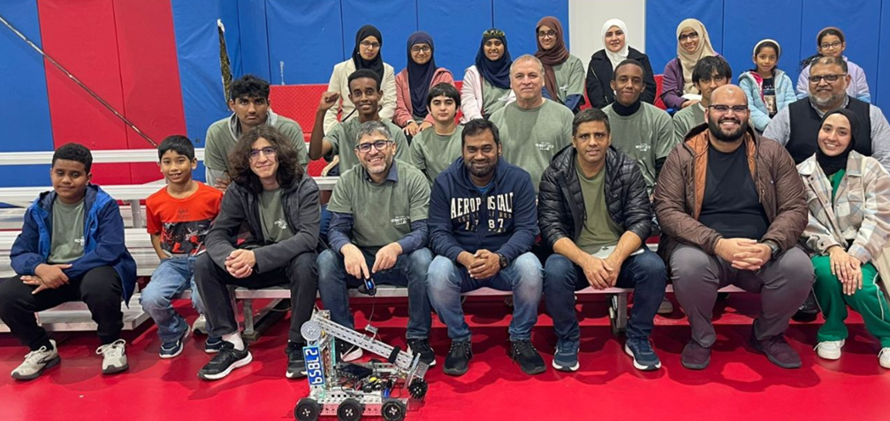

ICBC Ravenbots #27859
FTC Robotics team filled with passionate students in the Austin/Cedar Park area.
DonateGoals & Perspectives
Past Events & Awards
FiT-Central HSATigers
🏆 Connect Award
FiT-Central Semi-Area Championship
🏅 Finalist Alliance Award
🏆 Connect Award
LightSaders Rookie Invitational
🥈 2nd Place Alliance
The Numbers
15
Team members
5+
Awards
$2000+
Total funding